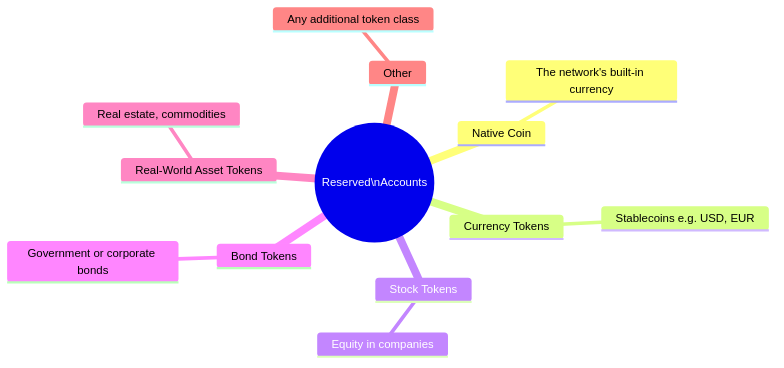

The Block Chain organises activity into a fixed heartbeat. Every 5 seconds one “tick” (called a slot) passes. During each tick, one elected participant may add a bundle of activity (a block) to the chain. A fixed number of ticks (currently about 7 days of slots) forms a round (called an epoch) at the end of which participants for the next round are elected.
| Concept | Plain meaning |
|---|---|
| Tick (slot) | 5-second window. At most one block is added per tick. |
| Round (epoch) | 7 days. Block producers for the next round are chosen at the end of each round, weighted by their stake. |
| Block | A sealed package of activity: transfers, account changes, and other records — linked to the block before it. |
Each block is a tamper-proof envelope. Once added to the chain it cannot be changed.

Types of activity a block can record
| Activity | What it does |
|---|---|
| Launch | Sets up the network for the first time |
| New account | Registers and funds a new participant |
| Transfer | Moves tokens between accounts |
| Update account | Participant updates their own profile |
| Renew account | Network keeps an account active |
| Close account | Network closes an account that can no longer pay its upkeep |
Three types of node keep the network running. They have distinct, non-overlapping roles so that no single participant can act alone to alter the chain. In the rare event that the original Beacon is permanently lost, a Relay that already holds the full chain can be promoted to become the new Beacon, preserving continuity.
| Role | What they do | Adds blocks? | Sees full history? |
|---|---|---|---|
| Beacon | Single authoritative record-keeper; validates everything | No | Yes |
| Relay | Trusted gateway — distributes the chain to miners, shields the Beacon | No | Yes |
| Miner | Elected participant who packages and adds new blocks; earns fees | Yes | partial |
Why this matters: Miners compete fairly — only the randomly elected miner for a given tick may add a block, and their election odds are proportional to how much they have staked. This makes the network both decentralised and predictable.
Nodes may be operated by AI agents. The design allows the transport layer to be upgraded later to quantum-resistant communication.
As the chain grows over months and years, storing every block from the very beginning becomes expensive. Checkpoints solve this: starting from launch day, the network marks confirmed ranges of blocks whose combined contents fully determine the current state of every account. The first checkpoint is the network launch itself; later checkpoints cover ranges between two neighbouring marks. New participants can join from a checkpoint and only need to read the blocks between that checkpoint and the previous one, instead of replaying the entire history.

| Term | Meaning |
|---|---|
| Snapshot (checkpoint) | A marker in the chain that guarantees every account’s latest state can be reconstructed from the blocks between this mark and the previous one (states are not required to sit in a single block) |
| Safe join-point | The checkpoint before the latest one — proven stable and widely agreed upon |
The network reserves a range of special accounts for issuing and managing tokens. These accounts are allowed to show negative balances as an accounting device (similar to a central bank’s balance sheet) and can create new token types.

| Account | Purpose |
|---|---|
| Genesis (account 0) | Issues the network’s native coin; sets initial supply |
| Fee collector (account 1) | Receives small upkeep fees paid by all accounts |
| Reserve (account 2) | Holds unallocated supply |
| Recycle (account 3) | Receives balances from closed accounts |
| Accounts 4 and above | Available for currency, stock, bond, RWA, and other token classes |
Each token type is issued from its own dedicated reserved account, giving issuance a clear, auditable home on-chain.
Every person or organisation on the network has a user account. Account identities are separate from cryptographic keys: users can rotate keys and switch algorithms without changing their account, enabling a path to post-quantum security. An account can hold any mix of tokens (native coin, stablecoins, equity, bonds, etc.) and carry a personal data attachment that can grow to include digital collectibles and self-executing contracts.

| Capability | Available today |
|---|---|
| Hold multiple token types | Yes |
| Require more than one key to spend (multi-sig) | Yes |
| Attach profile or custom data | Yes |
| Own digital collectibles (NFTs) | Planned |
| Self-executing rules (smart contracts) | Planned |
| Capability | Status |
|---|---|
| Predictable, time-based block production | Live |
| Stake-weighted, tamper-proof leader election | Live |
| Immutable transaction records | Live |
| Multi-token balances | Live |
| Small, usage-based fees | Live |
| Periodic checkpoints to keep storage lean | Live |
| Capability | Status |
|---|---|
| Beacon — authoritative record-keeper | Live |
| Relays — scalable miner gateway | Live |
| Miners — decentralised block production | Live |
| Miner fast-join via snapshots | Live |
Security note: The current network stack focuses on correctness and basic robustness. Advanced protections against large-scale abusive behaviour (such as massive connection floods or automated probing) are not yet implemented and should be assumed to require additional hardening before internet-wide deployment.
| Capability | Status |
|---|---|
| Native coin | Live |
| Custom token issuance (by reserved accounts) | Live |
| User account registration | Live |
| Account upkeep and closure | Live |
| Digital collectibles (NFTs) | Planned |
| Self-executing rules (smart contracts) | Planned |
| Dedicated currency / stock / bond / RWA token classes | Planned |
| Capability | Status |
|---|---|
| Command-line tool | Live |
| REST (HTTP) API | Live |
| JavaScript / Node.js library | Live |
| MCP (Model Context Protocol) server | Live |
| Real-time streaming API | Planned |
| Web explorer / dashboard | Planned |
This section summarises how our design differs from many other blockchain systems in two areas: consensus/network and accounts/checkpoints.
| Aspect | our design | Typical other chains |
|---|---|---|
| Authority model | Single Beacon as authoritative record-keeper; Relays as trusted gateways; Miners only produce blocks. No single role can alter the chain alone. | Often all full nodes are equal (e.g. Bitcoin) or validators both propose and validate (e.g. many PoS chains). |
| Block production | Only Miners add blocks; Beacon and Relays never produce blocks. Miners are elected per slot and connect via Relays (or optionally to Beacon). | Validators or miners usually talk to each other in a flat or mesh topology; no dedicated “authority + gateway” split. |
| Visibility | Miners see only a partial history (needed for proposing blocks); full chain lives at Beacon and Relays. | Full nodes and validators typically store and validate the full chain. |
| Recovery | A Relay that holds the full chain can be promoted to Beacon if the original Beacon is lost, preserving continuity without changing the protocol. | Failover is usually handled by out-of-band replacement or social consensus, not a defined “next Beacon” role. |
| Time and slots | Fixed 5-second slots and at most one block per slot; stake-weighted, VRF-based leader election (Ouroboros-style). | Variable block times or multiple blocks per “round” are common; leader selection varies by chain. |
In short: our design separates who keeps the truth (Beacon), who distributes it (Relays), and who extends it (Miners), instead of merging these into one validator set.
| Aspect | our design | Typical other chains |
|---|---|---|
| Checkpoints / sync | Checkpoints mark confirmed ranges; new participants join from a checkpoint and only process blocks between that checkpoint and the previous one. No need to replay from genesis. | New nodes often sync from genesis or from a recent “snapshot” that may be a full state dump rather than a chain-range guarantee. |
| State and history | Checkpoints guarantee that account state can be reconstructed from the blocks in the range between two consecutive checkpoints; state is not required to live in a single block. | State is usually derived from applying all blocks (or from a state DB); “checkpoint = chain range” is not always explicit. |
| Reserved accounts | Fixed reserved accounts (Genesis, Fee collector, Reserve, Recycle, then token issuers) with defined roles; some may have negative balances as an accounting device. | Often a single “system” or treasury address, or no formal reserved range; token issuance is contract- or protocol-specific. |
| Account lifecycle | Explicit registration, upkeep (fees), renewal, and closure; closed-account balances go to Recycle. Accounts can be closed by the network when they cannot pay upkeep. | Accounts are often “create once, use forever” or closed only by user action; no built-in upkeep or network-initiated closure. |
| Multi-token and issuance | Native multi-token balances per account; each token type is issued from a dedicated reserved account (4+), giving issuance a clear on-chain home. | Multi-token is usually via contracts or side tables; issuance is not always tied to a fixed reserved-account model. |
In short: our design treats checkpoints as bounded chain ranges that define state reconstruction and lean sync, and accounts as first-class objects with lifecycle, upkeep, and reserved-account-based token issuance, rather than only “address + balance” or contract-only issuance.